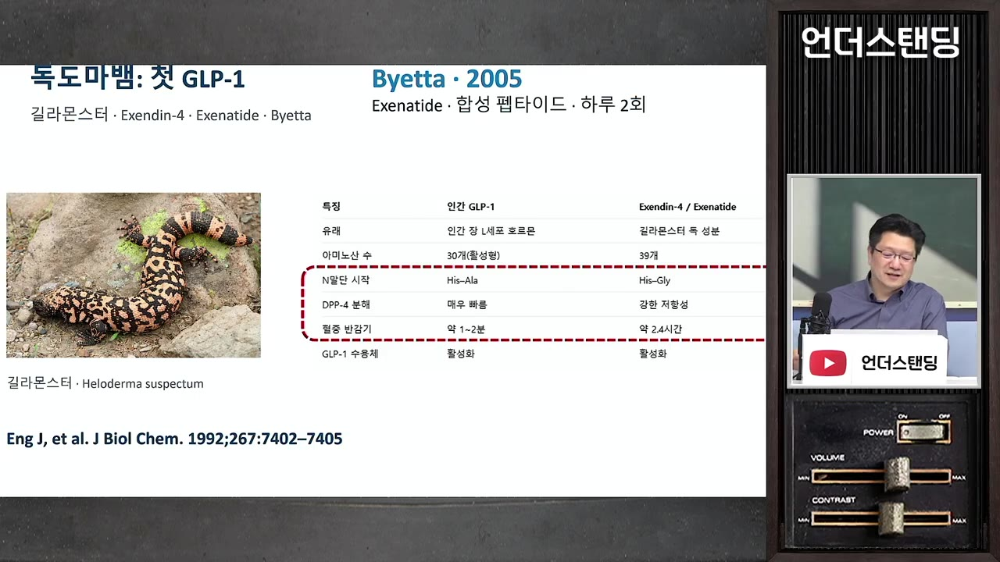
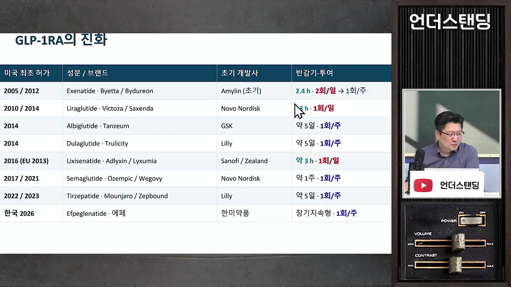
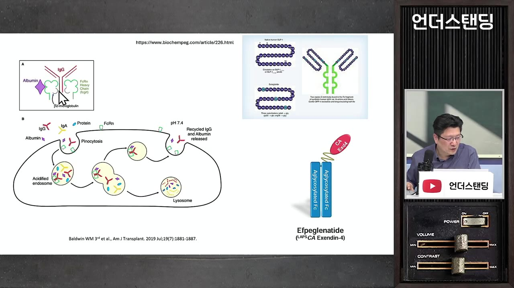
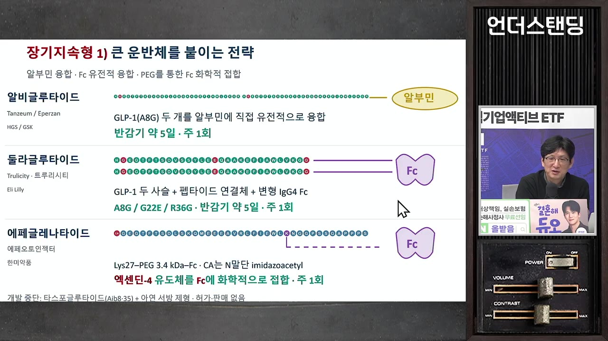
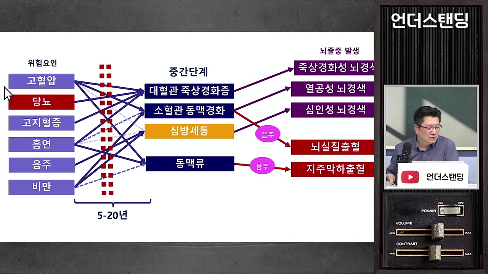
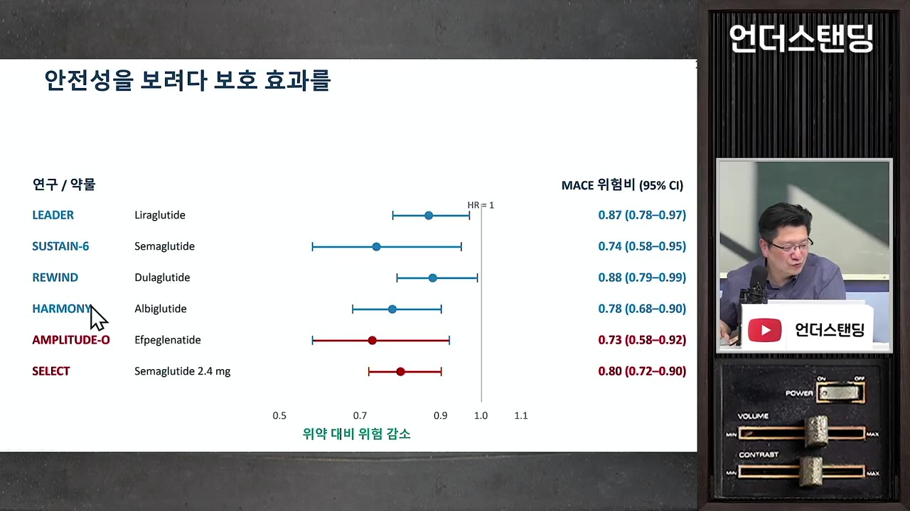
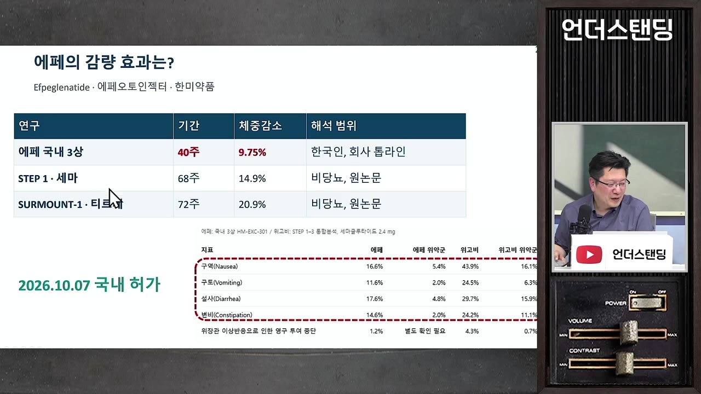
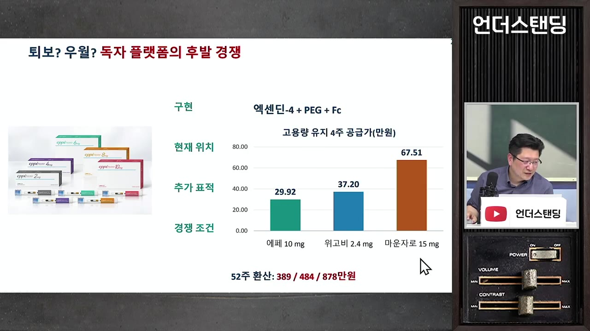
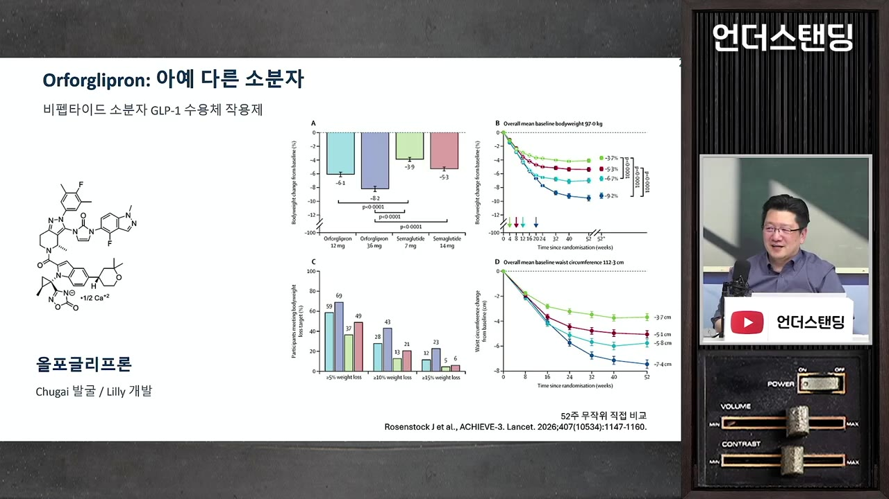
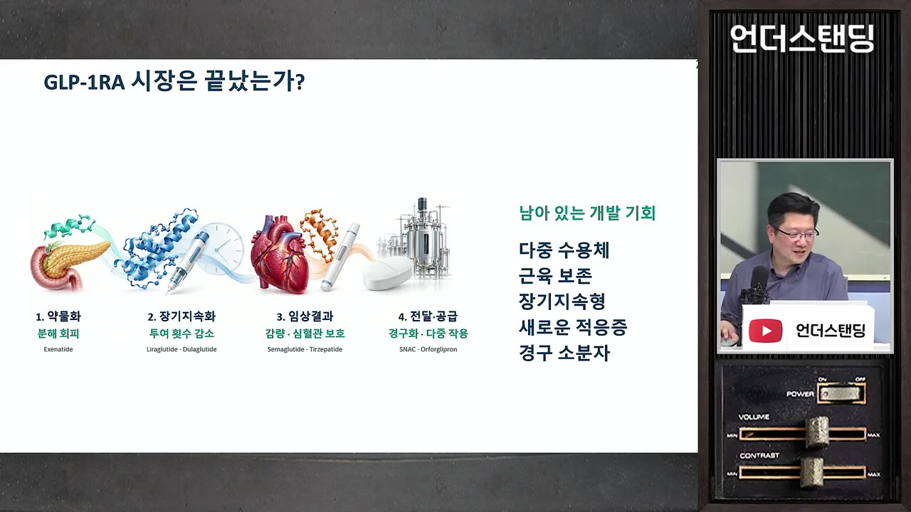

[이승훈의 비만약 1부] 위고비·마운자로와 완전히 다른 국산 '에페'의 냉정한 성적표. 벌써 1조 원어치 쌓아둔 '진짜 괴물'의 정체 (서울대병원 이승훈 교수)
🎙️ 자막 대신 영상 음성을 받아써서 정리 (ko (음성 받아쓰기·GPU))
▶ 원본 영상 보기한눈에 보기
- GLP-1 비만약 개발은 '빨리 분해되는 호르몬을 오래 가게 만들기'에서 시작해 주 1회 주사, 심혈관 보호 증명, 먹는 약 순서로 발전해 왔다는 것이 이승훈 교수의 설명이다.
- 위고비·마운자로는 값싼 '지방산+알부민' 방식으로 원가를 낮췄지만, 한미약품 '에페'는 도마뱀 독 유래 성분(엑센딘-4)에 비싼 Fc를 붙인 방식이라 기술 흐름에서 벗어나 있다고 본다.
- 에페는 당뇨 임상에서 심혈관 사건 27% 감소라는 좋은 성적을 냈지만, 비만 임상(국내 40주)의 체중 감량은 약 10%로 위고비(14.9%)·마운자로(20.9%)보다 낮다. 다만 시험 조건이 달라 직접 비교는 할 수 없다.
- 에페의 강점은 구역·구토가 적다는 회사 발표 데이터와, 연간 약값 389만 원(마운자로 878만 원의 절반 수준)이다.
- 다음 승부처는 먹는 소분자 약이다. 릴리의 올포글리프론(파운다요)은 원가가 싸고 위고비정과의 직접 비교에서 앞섰다고 한다. 릴리는 허가 전에 이미 약 1조 원어치를 생산해 쌓아 뒀다.
이런 분께 도움이 됩니다
- 위고비·마운자로·에페 중 무엇이 어떻게 다른지 원리부터 알고 싶은 분
- 한미약품 등 비만약 관련 기업을 보는 투자자 (단, 영상은 의사의 개인 분석이다)
- 비만약을 오래 맞아도 되는지, 끊으면 어떻게 되는지 궁금한 분
핵심 내용
GLP-1은 무엇이고 왜 약으로 만들기 어려웠나
- GLP-1은 배가 부를 때 소장 끝부분(L세포)에서 나오는 장호르몬(인크레틴)이다. 하는 일은 세 가지다. (4:31)
- 뇌에 "배부르다"는 신호를 보낸다.
- 혈당이 높다고 보고 인슐린 분비를 늘린다.
- 음식이 장을 지나가는 속도를 늦춘다.
- 비슷한 호르몬인 GIP는 소장 앞부분(K세포)에서 나오며, 한때는 반대 작용을 한다는 의견도 있었다.
- 약으로 만들 때의 문제는 반감기다. 몸에서 나온 GLP-1은 1~2분이면 DPP-4라는 효소에 분해된다. (7:56)
💡 포만감이 금방 사라지는 이유는 이 호르몬이 1~2분 만에 분해되기 때문이다.
- 해결의 실마리는 독도마뱀 '길라몬스터'의 독에서 나왔다. 독 속 단백질이 사람 GLP-1과 50~60% 같았고, 존 앵(John Eng)이 이 사실을 알아냈다.
- 이 성분이 엑센딘-4다. 아미노산 하나가 달라서 DPP-4에 잘 분해되지 않고, 효과는 비슷하면서 2.4시간 지속된다. (9:06)
- 독으로 작용하는 성분은 아니다. 독 안에 들어 있을 뿐이다.

GLP-1 약 개발이 풀어 온 숙제 4가지
- 분해 피하기
- 주사 횟수 줄이기
- 심혈관 보호 증명
- 먹는 약·다양한 효과
- 1분해 피하기
도마뱀 독 성분(엑센딘-4)으로 1~2분이던 반감기를 2.4시간으로 늘렸다. 첫 약 엑세나타이드(바이에타)는 하루 2번 주사했다. (10:38)
- 2주사 횟수 줄이기
리라글루타이드(삭센다·빅토자)가 반감기 13시간으로 하루 1회를 달성했고, 이후 주 1회 약들이 대세가 됐다.

약별 첫 허가 연도와 반감기·투약 횟수(2회/일→1회/주) 표 · ▶ 14:18 - 3심혈관 보호 증명
아반디아 사건 이후 FDA가 당뇨약에 심근경색·뇌졸중을 늘리지 않는다는 증명을 요구했다. 임상이 몇 년으로 길어지고 비용이 크게 늘었다.
- 4먹는 약·다양한 효과
주사가 싫다는 요구에 맞춰 먹는 약이 나오고, 근육 보존 같은 추가 효과를 노리는 단계다. 지금 진행 중이다.
- GLP-1 약은 대부분 당뇨약으로 먼저 개발되고, 그다음에 비만약으로 확장된다.
- 삭센다는 2014년 미국에서 비만약 허가를 받으며 비만약으로 쓰인 첫 GLP-1이 됐다고 한다. (23:46)
- 약을 피하주사로 놓는 이유는 천천히 흡수되게 하려는 것이다. 약물 농도가 급하게 오르면 구역·구토 같은 부작용이 세진다.
오래 가게 만드는 기술: 약마다 방법이 다르다
- 모두 'GLP-1 구조를 바탕으로 한 펩타이드(작은 단백질, 분자량 약 1만)'라는 점만 같다. 나머지는 특허 때문에 모두 다르다. (1:40)
- 단백질 약은 똑같이 복제할 수 없어서 제네릭이 아니라 '바이오시밀러'가 나온다. GLP-1 약은 아직 바이오시밀러도 없다.
| 약(제품명) | 회사 | 바탕 성분 | 오래 가게 한 방법 | 결과 |
|---|---|---|---|---|
| 엑세나타이드(바이에타) | 아스트라제네카 판매 | 도마뱀 독 | 그대로 사용 | 2.4시간, 하루 2회 |
| 엑세나타이드 서방형(바이듀레온) | 〃 | 도마뱀 독 | PLGA 미세입자에 넣어 천천히 방출 | 주 1회 |
| 릭시세나타이드(릭수미아) | 사노피 | 도마뱀 독 일부 변형 | 특허 회피용 변형 | 3시간, 잘 안 팔림 |
| 리라글루타이드(삭센다·빅토자) | 노보노디스크 | 사람 GLP-1 | 지방산을 붙여 몸속 알부민에 달라붙게 함 | 13시간, 하루 1회 |
| 알비글루타이드 | GSK | 사람 GLP-1 | 알부민을 직접 붙임 | 주 1회지만 비싸서 출시 포기 |
| 둘라글루타이드(트루리시티) | 릴리 | 사람 GLP-1 | 항체 몸통(Fc)을 붙임 | 주 1회, 비쌈 |
| 세마글루타이드(위고비·오젬픽) | 노보노디스크 | 사람 GLP-1 | 개량한 C18 지방산으로 알부민 결합력을 높임 | 주 1회, 쌈 |
| 터제파타이드(마운자로) | 릴리 | 사람 GIP | GLP-1도 흉내 내게 구조를 바꾸고 C20 지방산을 붙임 | 주 1회, 쌈 |
| 에페글레나타이드(에페) | 한미약품 | 도마뱀 독(엑센딘-4) 수정 | Fc를 링커로 연결(랩스커버리 기술) | 주 1회, 비쌈 |
- 알부민 방식: 혈액에 가장 흔한 단백질인 알부민에 약이 붙으면 천천히 돌아다니며 오래 남는다. 지방산 하나만 붙이면 되니 값이 싸다. (22:05)
- Fc 방식: 항체 몸통(Fc)이 혈관벽의 FcRn 수용체에 붙으면, 세포가 분해하지 않고 혈액으로 되돌려 보낸다. Fc를 붙이면 약이 이 '신분증'을 얻는 셈이다. (29:57)

- 대신 분자량 수천인 약에 약 10만짜리 Fc를 유전자 재조합으로 만들어 붙여야 해서 원가가 크게 오른다.

- 같은 계열에서 늦게 나온 약은 앞선 약보다 크게 비쌀 수 없다. 첫 약이 이미 가격 기준을 만들어 놓기 때문이다.
💡 노보·릴리가 이긴 비결은 기술의 화려함이 아니라 '싸게 만드는 기술'이었다.
- 마운자로는 위고비를 직접 사 와서 맞대결 임상(head-to-head)을 해 이겼다.
아반디아 스캔들: 당뇨약이 심혈관 보호까지 증명하게 된 이유
- GSK의 인기 당뇨약 아반디아(로시글리타존)를 두고, 스티브 니센이 임상시험 42개를 합친 메타분석을 NEJM에 발표했다. 결과는 심근경색이 오히려 늘어난다는 것이었다. (42:14)
- 영상에 따르면 같은 계열 약은 피오글리타존 하나만 남고 퇴출됐고, FDA는 이후 모든 당뇨약에 심혈관 안전성 증명을 요구했다. (44:10)

- 메타분석이 잘못됐다는 반론도 많았고, GSK가 내부 데이터로 미리 알았다는 의혹도 있었다.
- 이후 심혈관을 제대로 확인한 GLP-1 임상은 모두 보호 효과를 증명하는 데 성공했다.
- 세마글루타이드 SELECT 임상: 심혈관 사건 20% 감소, 68주 동안 체중 15% 감소.
- 마운자로 SURMOUNT-5: 마운자로 20% 감량, 위고비 13.7% 감량으로 통계적으로 차이가 있었다. (47:45)
- 체중은 1년쯤까지 많이 빠지고 그 뒤로는 거의 더 빠지지 않는다.

에페의 파란만장한 이력
- 신약 개발 착수
- 사노피 기술수출
- 사노피 반환
- NEJM 논문 발표
- 경영권 분쟁
- 비만약 전환
- 국내 3상·허가
- 1신약 개발 착수
고 임성기 회장이 신약에 계속 투자했고, 2008년 당뇨약 개발을 시작했다. (52:03)
- 2사노피 기술수출
2015년 '퀀텀 프로젝트' 3개 약을 총 5조 원 이상에 넘겼다. 계약금만 약 5천억 원이었고 바이오주 열풍의 시작이 됐다.
- 3사노피 반환
5년 뒤 사노피가 반환했다. 주가가 급락했고 창업주가 별세했다.
- 별세와 반환 확정 시점의 선후는 자막상 엇갈린다.
- 4NEJM 논문 발표
반환 약 1년 뒤 사노피가 끝낸 3상 결과가 실렸다. 심혈관 사건 27% 감소, 신장 지표 개선. 다만 허가 신청은 하지 않았다.
- 5경영권 분쟁
모녀 측과 형제 측의 분쟁이 이어졌고, 신약 개발은 정체됐다.
- 6비만약 전환
2023년에 비만약으로 개발하기로 결정했다.
- 7국내 3상·허가
2024년 한국인 대상 3상을 시작했고 최근 허가를 받았다. (59:20)
- 반환 이유는 약효 부족이 아니라 사노피의 사업 재편(희귀의약품 집중)이었다는 것이 교수의 설명이다. (52:53)
- 예시: 소아 척수성 근위축증 유전자 치료제는 1회 주사에 25억 원(지금은 환율 때문에 약 40억 원)이다.
- 교수는 반환 이유가 두 가지 더 있을 것으로 추정한다.
- 엑센딘-4 기반은 지금 한미약품뿐이라 대세와 맞지 않는다. 사람 GLP-1 특허를 빅파마가 선점한 탓일 수 있다.
- Fc 때문에 생산 단가가 높다. 후발주자인데 시장 가격은 이미 마운자로 수준에 맞춰져 있다.
- 노보나 릴리처럼 당뇨약에 진심인 회사가 가져갔다면 결과가 달랐을 수 있다고 아쉬워했다.
에페의 냉정한 성적표
- 아직 논문이 나오지 않아 회사가 공개한 탑라인 결과로만 비교한 것이다. (1:02:12)

| 항목 | 에페 | 위고비 | 마운자로 |
|---|---|---|---|
| 임상 기간 | 40주(국내) | 68주 | 72주 |
| 체중 감소 | 약 10% | 14.9% | 20.9% |
| 구역·구토·설사 | 16%, 11% 수준 | 40%대 | — |
| 최고 용량 연간 비용 | 389만 원(회사 공급가) | 484만 원 | 878만 원 |
- 비용은 교수가 AI로 계산한 값이다.

- 임상을 70주로 늘렸다고 해서 10%가 20%가 되지는 않았을 것으로 본다. 40주가 넘으면 감량이 정체되기 때문이다.
- 서로 다른 임상의 수치 비교는 올바른 비교가 아니다. 비만 임상 참가자는 약을 무료로 받아서 부작용을 잘 참고, 위약군도 꽤 빠진다. (1:03:47)
- "마운자로의 절반 가격에 효과도 절반"이라는 평가가 나온다. 회사가 정한 용량이 적절했는지도 의문이다.
- 늦게 나온 약은 '베스트 인 클래스'(같은 계열 최고)여야 팔린다. 교수는 에페를 우월도 퇴보도 아닌 '독자 플랫폼을 가진 후발주자'로 본다. (1:05:41)
- 에페가 경쟁력을 가질 수 있는 경우는 두 가지다.
- 위고비·마운자로의 구토 때문에 못 맞는 사람
- 10% 감량이면 충분한 사람
💡 에페의 무기는 감량 폭이 아니라 '덜 괴로움'과 가격이다.
- 같은 약에도 반응은 사람마다 크게 다르다.
- 두 달에 13kg 빠진 사람이 있는가 하면, 전혀 안 빠지는 사람도 있다. DPP-4가 강해 약을 분해해 버리는 경우일 수 있다.
- 일주일 내내 배멀미처럼 구토하는 사람도 있다.
먹는 비만약: 다음 승부처
- 펩타이드는 위장에서 아미노산으로 분해되면 효과가 없어진다. 그래서 먹는 단백질 약은 '꿈의 기술'로 불렸다. (1:09:13)
- 리벨서스·위고비정(노보노디스크): SNAC 기술을 가진 회사를 인수해 확보했다.
- 위 끝에서 약 1%만 흡수된다. 그래서 하루하루 먹는 양을 합치면 주사의 약 70배를 먹는다.
- 체중 감량은 13.6%로 주사보다 약간 덜하다. 사람마다 흡수율이 달라 실제로 들어가는 양도 다르다.
- 삼천당제약 S-PASS: SNAC과 같은 원리를 독자 개발했다고 주장하지만, 교수는 아직 입증되지 않았다고 본다. (1:12:42)
- 올포글리프론(파운다요, 릴리): 로슈 자회사인 일본 주가이가 개발했고 릴리가 사 갔다. 미국에서는 출시됐다.
- 펩타이드가 아닌 소분자 화학약(아스피린 같은 약)이라 분해될 게 없다. 공장에서 대량 생산하면 원가가 매우 싸다. (1:13:32)
- 위고비정과 맞대결했다. 원래 '비열등성 시험'(비슷하면 인정받는 설계)이었는데 결과는 이겼다고 한다.

- 마운자로 때 재고 부족을 겪은 릴리는 허가 전에 약 1조 원어치를 미리 생산해 쌓아 뒀다.
💡 펩타이드끼리 작동하던 수용체를 작은 화학분자로 움직였다는 점이 혁신이다.
앞으로의 방향과 '평생 맞아도 되나'
- 앞으로의 개발 방향은 다음과 같다. (1:18:57)
- 기술 혁신보다 저분자화와 단가 인하가 중요해진다.
- 근육은 지키고 지방만 빼는 약을 더한다.
- 한 번 맞으면 6개월 가는 주사를 만든다.

- 약을 끊으면 60~70% 이상에서 요요가 오고, 입맛은 예전보다 더 살아날 수 있다고 한다. 교수는 "요요는 100% 온다"고도 표현했다.
- 몸이 스스로 만드는 포만 신호가 약해져 있기 때문이다.
- 장기 안전성에 대해서는 허가 임상 최장 기간이 약 5년이고, 그보다 긴 양질의 데이터는 없다고 했다. (1:21:38)
- 몸에 원래 있는 성분이고 5년간 큰 문제가 없었으니, 반전이 생길 가능성은 높지 않다는 것이 교수의 판단이다.
- 체질량지수(BMI)별 교수의 의견은 다음과 같다. 영상 속 개인 의견이므로 진료를 대신할 수 없다.
- 30 이상: 의지로 유지하기 어렵고 경제적 여유가 있다면 평생 투여가 나은 방향일 수 있다. (1:23:50)
- 25~30: 심혈관·뇌졸중 위험요인이 있으면 계속 맞고, 아니라면 식단과 운동을 선택할 수 있다.
- 25 이하: 고려하지 않는다.
- 약값 전망: 소분자 약은 특허가 끝나면 카피약이 나와 가격이 크게 떨어진다. 펩타이드는 바이오시밀러가 나와야 내려간다. 한국은 특허가 끝나도 약가가 꽤 유지되는 편이라고 한다.
기억할 숫자·인용
- 사람 GLP-1 반감기 1~2분, 엑센딘-4 2.4시간, 리라글루타이드 13시간, 주 1회 약들은 약 1주
- SELECT: 심혈관 사건 20% 감소, 68주 체중 15% 감소
- SURMOUNT-5: 마운자로 20% 감량, 위고비 13.7% 감량
- 에페 당뇨 3상(자막상 '앰플리튜드 5', 실제 시험명은 AMPLITUDE-O로 보임 — 보충): 심혈관 사건 27% 감소
- 한미 퀀텀 프로젝트: 총 5조 원 이상, 계약금 약 5천억 원(2015)
- 에페 비만 3상: 40주 약 10% 감량. 연간 389만 원 vs 위고비 484만 원 vs 마운자로 878만 원
- 위고비정: 흡수율 약 1%, 주사의 약 70배 복용, 감량 13.6%
- 릴리는 올포글리프론을 허가 전에 약 1조 원어치 생산
- "자기들만의 독자 플랫폼 기술의 후발주자라고만 봐야 될 것 같다." — 이승훈 교수
생각해볼 점
- 에페의 '부작용이 적다'는 근거는 서로 다른 임상의 회사 발표 수치다. 교수 스스로 올바른 비교가 아니라고 했다. 직접 비교 임상이나 논문이 나올 때까지는 가능성으로만 봐야 한다.
- 아반디아 사건에서 "FDA가 허가를 취소했다"는 부분은 확인이 필요하다. (보충) 미국에서는 사용 제한 후 2013년 제한이 풀렸고, 유럽에서는 판매가 중단된 것으로 알려져 있다.
- 사노피의 반환 이유 중 '엑센딘-4 대세 이탈'과 'Fc 단가'는 교수의 추정이고, 한미약품은 다른 설명을 내놓았다. 투자 판단에 쓰려면 회사 공시와 논문을 함께 확인해야 한다.
바로 해볼 일
- 내 BMI를 계산해 보기 (몸무게 kg ÷ 키 m²). 25·30 기준 중 어디에 해당하는지 확인
- 비만약을 고민 중이라면 구역·구토를 얼마나 견딜 수 있는지, 끊은 뒤 요요에 어떻게 대비할지 의사와 상의할 질문으로 적어 두기
- 한미약품 에페 3상 논문, 올포글리프론 국내 출시 소식이 나오면 이 노트의 숫자와 비교해 보기